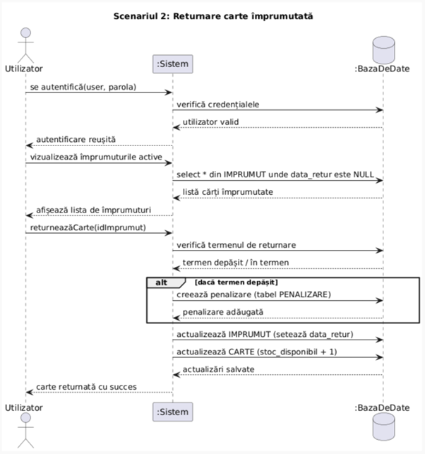
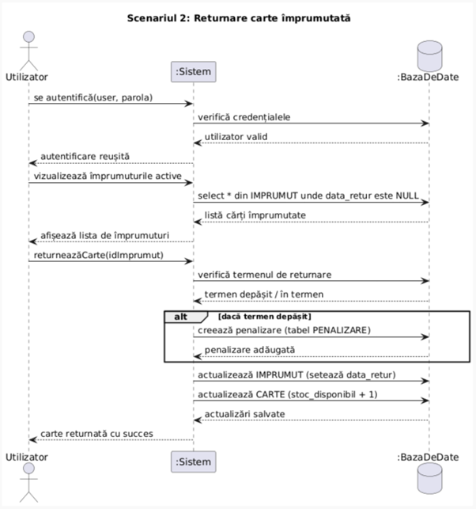

Descrierea proiectului
Această aplicație dezvoltată în PHP are ca scop gestionarea eficientă a unei biblioteci, atât a listei de utilizatori (incluzând clienții, angajații și administratorii), cât și a cărților. Aplicația permite adăugarea, ștergerea, modificarea stocurilor de cărți, înregistrarea utilizatorilor și verificarea istoricului cărților împrumutate, precum și a timpului rămas până la returnare.
Include funcționalitate de căutare avansată (după an, categorie, autor etc.) pentru a ajuta utilizatorii să găsească rapid cărțile dorite. De asemenea, poate genera rapoarte — cum ar fi numărul utilizatorilor înregistrați într-o anumită lună sau numărul de cărți împrumutate.
Tabele SQL
CREATE TABLE UTILIZATOR (
id_utilizator INT PRIMARY KEY AUTO_INCREMENT NOT NULL,
nume VARCHAR(100) NOT NULL,
prenume VARCHAR(100) NOT NULL,
data_nasterii DATE NOT NULL,
email VARCHAR(100) UNIQUE NOT NULL,
telefon VARCHAR(15),
data_inscriere DATE DEFAULT CURRENT_DATE,
parola VARCHAR(255) NOT NULL,
rol ENUM('membru', 'bibliotecar', 'admin') NOT NULL DEFAULT 'membru'
);CREATE TABLE AUTOR (
id_autor INT PRIMARY KEY AUTO_INCREMENT NOT NULL,
nume VARCHAR(150) NOT NULL,
nationalitate VARCHAR(100),
data_nasterii DATE,
descriere TEXT
);CREATE TABLE EDITURA (
id_editura INT PRIMARY KEY AUTO_INCREMENT NOT NULL,
nume VARCHAR(150) NOT NULL,
oras VARCHAR(100),
tara VARCHAR(100)
);CREATE TABLE CARTE (
id_carte INT PRIMARY KEY AUTO_INCREMENT NOT NULL,
titlu VARCHAR(255) NOT NULL,
id_autor INT NOT NULL,
id_editura INT NOT NULL,
an_publicare YEAR,
categorie VARCHAR(100),
stoc_total INT NOT NULL DEFAULT 0,
stoc_disponibil INT NOT NULL DEFAULT 0,
coperta VARCHAR(255),
FOREIGN KEY (id_autor) REFERENCES AUTOR(id_autor)
ON DELETE CASCADE ON UPDATE CASCADE,
FOREIGN KEY (id_editura) REFERENCES EDITURA(id_editura)
ON DELETE CASCADE ON UPDATE CASCADE
);CREATE TABLE IMPRUMUT (
id_imprumut INT PRIMARY KEY AUTO_INCREMENT NOT NULL,
id_utilizator INT NOT NULL,
id_carte INT NOT NULL,
data_imprumut DATE NOT NULL DEFAULT CURRENT_DATE,
data_scadenta DATE NOT NULL,
data_retur DATE,
FOREIGN KEY (id_utilizator) REFERENCES UTILIZATOR(id_utilizator)
ON DELETE CASCADE ON UPDATE CASCADE,
FOREIGN KEY (id_carte) REFERENCES CARTE(id_carte)
ON DELETE CASCADE ON UPDATE CASCADE
);CREATE TABLE RECENZIE (
id_recenzie INT PRIMARY KEY AUTO_INCREMENT NOT NULL,
id_carte INT NOT NULL,
id_utilizator INT NOT NULL,
rating INT CHECK (rating BETWEEN 1 AND 5),
comentariu TEXT,
data DATE DEFAULT CURRENT_DATE,
FOREIGN KEY (id_carte) REFERENCES CARTE(id_carte)
ON DELETE CASCADE ON UPDATE CASCADE,
FOREIGN KEY (id_utilizator) REFERENCES UTILIZATOR(id_utilizator)
ON DELETE CASCADE ON UPDATE CASCADE
);CREATE TABLE PENALIZARE (
id_penalizare INT PRIMARY KEY AUTO_INCREMENT NOT NULL,
id_utilizator INT NOT NULL,
id_carte INT NOT NULL,
suma DECIMAL(10,2) NOT NULL CHECK (suma >= 0),
motiv VARCHAR(255) NOT NULL,
status ENUM('neachitata', 'achitata') DEFAULT 'neachitata',
FOREIGN KEY (id_utilizator) REFERENCES UTILIZATOR(id_utilizator)
ON DELETE CASCADE ON UPDATE CASCADE,
FOREIGN KEY (id_carte) REFERENCES CARTE(id_carte)
ON DELETE CASCADE ON UPDATE CASCADE
);Descrierea relațiilor dintre tabele
- UTILIZATOR - IMPRUMUT: Relatie intre entitatile UTILIZATOR si IMPRUMUT, indicand ce imprumuturi a facut fiecare utilizator. Cardinalitate minima 1:0 (utilizatorul poate sa nu fi imprumutat nici o carte), maxima 1:n (un utilizator poate imprumuta mai multe carti)
- CARTE - IMPRUMUT: Relatie intre entitatile CARTE si IMPRUMUT, indicand ce carti au fost imprumutate. Cardinalitate minima 1:0 (o carte poate sa nu fie imprumutata), maxima 1:n (aceeasi carte poate sa fie imprumutata de mai multe ori)
- UTILIZATOR - RECENZIE: Relatie intre entitatile UTILIZATOR si RECENZIE, indicand recenziile scrise de utilizatori. Cardinalitate minima 1:0 (un utilizator poate sa nu fi scris nici o recenzie), maxima 1:n (un utilizator poate scrie mai multe recenzii)
- CARTE - RECENZIE: Relatie intre entitatile CARTE si RECENZIE, indicand recenziile scrise pentru carti. Cardinalitate minima 1:0 (o carte poate sa nu aiba nici o recenzie), maxima 1:n (o carte poate avea mai multe recenzii)
- EDITURA - CARTE: Relatie intre entitatile EDITURA si CARTE, indicand cartile detinute de o editura. Cardinalitate minima 1:1 (o editura poate detine minim o carte), maxima 1:n (o editura poate detine mai multe carti)
- AUTOR - CARTE: Relatie intre entitatile AUTOR si CARTE, indicand cartile scrise de autori. Cardinalitate minima 1:1 (un autor a scris minim o carte), maxima 1:n (un autor poate sa fi scris mai multe carti)
- CARTE - PENALIZARE: Relatie intre entitatile CARTE si PENALIZARE, indicand ce carte apartine unei penalizari. Cardinalitate minima 1:0 (o carte poate sa nu apartina nici unei penalizari), maxima 1:n (o carte poate sa apartina la mai multe penalizari)
- UTILIZATOR - PENALIZARE: Relatie intre entitatile UTILIZATOR si PENALIZARE, indicand ce penalizari are fiecare utilizator. Cardinalitate minima 1:0 (un utilizator poate sa nu aiba nici o penalizare), maxima 1:n (un utilizator poate avea mai multe penalizari).
Diagrama conceptuală

Diagrame UML
 
